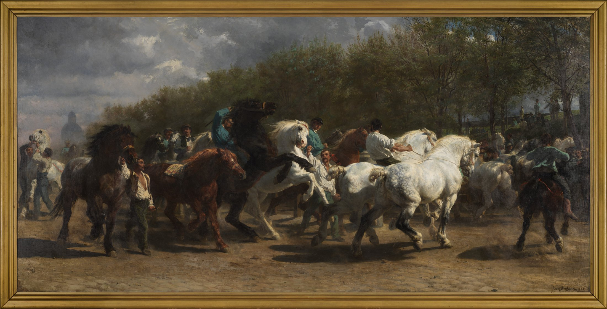

每日艺术 · 2026.08.22 · 绘画
马市：五米画布上的一场疾驰
画面没有真正冲出边框，但你的身体已经先让开了。
作品The Horse Fair
作者Rosa Bonheur
年代1852–55
媒材布面油画
作品档案｜事实
Rosa Bonheur（1822–1899）于 1852 年开始创作，1853 年在巴黎沙龙展出，之后修改至 1855 年。画布约 244.5 × 506.7 厘米，描绘 Boulevard de l’Hôpital 一带的巴黎马市。馆方记载，她在一年半里每周两次到现场画速写，并穿男装以减少干扰。作品现藏纽约大都会艺术博物馆，编号 87.25。
构图｜一条被折弯的横向洪流
前景马群沿浅弧回旋：左侧深色马压住起点，中部昂起的黑白马头形成高峰，右侧两匹亮马把力量推出画外。高地平线与低视点放大胸腔和马腿；树林像暗幕，把白马托亮。两端被截断的身体暗示队伍仍在画外继续。
这是“每日艺术”的形式分析：真正制造速度的，是马背、头颈、手臂与缰绳交替升降的视觉重音。
色彩与光｜灰调里的冷暖搏斗
低纯度黄褐、橄榄绿与炭黑构成暖性底场；蓝灰天空和孔雀蓝衣服注入冷色。锈红与蓝绿色接近互补，却被灰调压低，所以有力而不刺眼。白马也不是纯白：暖灰、冷灰和赭色反光交叠，眼睛在白—黑—白之间跳跃。
#A47B55
#242522
#D8D2C2
#3F4635
云隙光像剪辑：它跳过次要人物，只挑亮昂起的脸、鬃毛与肌肉；地面尘土融化硬边，让腿部像一瞬间的运动残像。
技法与作者｜把动物画推到历史画的尺度
Bonheur 以持续现场观察和速写建立姿态，再以油画统一群像。马头与肩胛更清楚，腿、尘和暗部边缘更松：硬边负责定点，软边负责加速。她把历史画的超大尺度与纪念碑式横幅构图，交给现实劳动场景与动物主体。
她是 19 世纪最成功的动物画家之一。进入当时男性主导的马市写生，为作品带来观察的可信度，也显示她如何穿越性别化的公共空间。
为什么动人｜秩序并没有消灭野性
人们拉紧缰绳、维持队形，而每匹马仍保留自己的方向。宏观上是一道有秩序的弧线；局部却充满昂首、侧闪、踢尘和抵抗。我们先享受速度，随后才意识到：所谓“控制”，只是让巨大生命暂时同向。
以上为“每日艺术”的观看观点，并非作者自述。
可借鉴｜动势与配色公式
- 高地平线 + 低视点 + 1 条浅弧主动线；最高明度放在中右，边缘主动截断。
#A47B5535% +#24252225% +#D8D2C220% +#3F463512% +#176B735% +#8B3F2B3%。- 连续动作不必平均清晰：脸和肩用硬边，腿与尘用软边；穿搭可用骨白主件 + 马具黑鞋包 + 暖土外套，只留一处孔雀蓝。